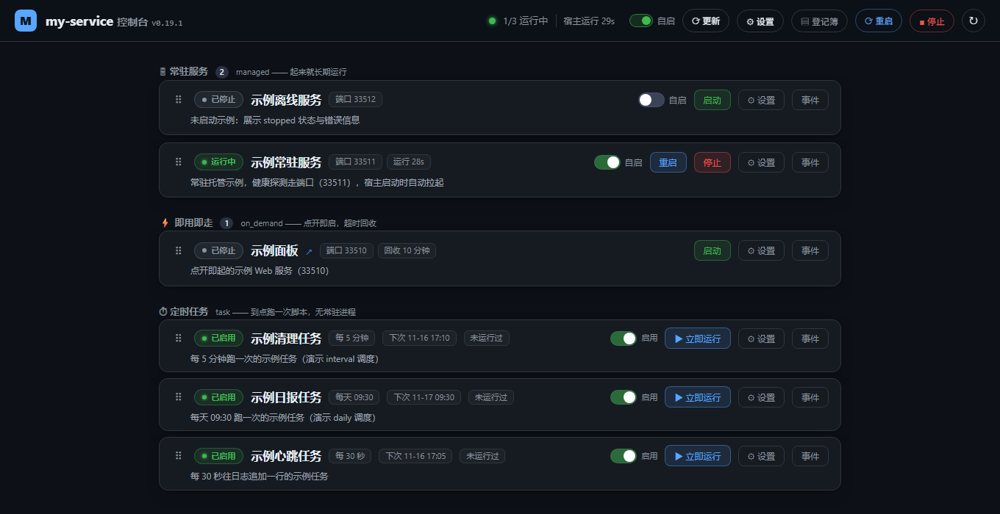

Windows 10 / 11
Python 3.10+
零第三方依赖
 MIT
MIT
MIT
my-service
面向 AI 时代的本地控制台——把你亲手写的那些小服务，收进一处统一管理。
写一个服务变容易了，但怎么起、怎么停、活着没有、开机要不要自启、到点跑不跑、出错去哪看， 每个小服务都得重来一遍——而这里，一份 JSON 注册条就能把这些接管掉。
帮我下载并安装 my-service，按文档把本机服务接入：https://github.com/keeyangyy/my-service
